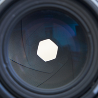
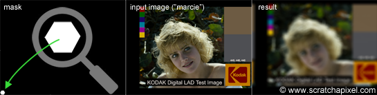

Introduction: the Bokeh Effect
The bokeh effect is a visual artifact but a pleasing one which is often considered as contributing greatly to the aesthetic visual quality of a photograph. One can actually use this effect to his or her advantage to create stunning or interesting looking images as showed in the few examples below. In this lesson, we will show how this effect can be simulated using 2D techniques only. If you don't know what booked is, it takes the shape of these circles of confusion that you can see in the out-of-focus area of the photographs below. As a short reminder, let's just recall that the lens of a camera, focuses light reflected by objects in the scene onto the image plane. However, only points within a given distance will appear in focus in the image. All the other points (those too close or too far) have their light spread across an area potentially greater than a pixel in the image creating these circular shapes. Every point from the scene appearing out of focus in the image is blurred that way, however, by effect of contrast, bright spots in the scene such as light sources create circles of confusion which are clearly more visible than those generated by darker points.
We won't give too much detail in this lesson on the origin of the bokeh effect. Another lesson will be fully devoted to this interesting topic as well as the topic of simulating lens aberrations in general (you can also find some useful information about depth of field and blur in the lesson on cameras). For now, let's just say that in fact, these circles don't always appear circular. When bladed apertures are used, out-of-focus points are blurred into the polygonal shape formed by the aperture blades (you can see this blades in the adjacent image). This effect is clearly visible in the upper left photograph. When the blades are rounded, circular shapes are formed but when they are straight, then polygonal shapes are formed. Let's now explore one possible way of simulating this effect in 2D.
Simulating the Bokeh Effect in 2D
Figure 1: a circle of confusion is creating by many rays reflected by a point in the scene and passing through the aperture of the camera.
Figure 2: blur can be simulated by shifting pixels around and accumulating the results.
A crude explanation for this effect is that light reflected by objects in the scene is reflected in all directions (this is of course true of diffuse objects only). A fraction of this light will pass through the aperture of the camera and will create on the film plane a circle of confusion (or a polygon shape depending on the shape of the blades as explained above). You would need a lens to focus these rays back to a single point on the image plane. But let's not diverge. A circle of confusion is created when a single point appears in several places on the image plane. How can this effect simulated in 2D? Imagine a single white pixel in the middle of black image. By shifting this image by a one pixel in every direction, and accumulating the results, we can also make this one pixel appear in several places in the image. Figure 2 shows the steps of this proces. What you do is smearing the pixel over its neighbours. In this animation, the original image is shifted in all directions by one pixel only but this is only to simplify the demonstration; nothing stops you from using a shift greater than a pixel, to create a larger blur. Note that as we shift a copy of the original image in one direction and accumulate the result, we can also reduce the opacity of the copy, to create a soft blur. As a general rule, you can make the opacity of the copy depends on the amount of shift you apply so that as the white pixel gets further away from its original position, its brightness fades out. In image processing, shifting a copy of the image and accumulating the results is similar to what you do when you apply a blur filter to an image. The principle by which we create this blur in this particular example though is not the way you would typically do it, but this will be explained in the lesson on image filters. Finally, if you wish, you are not limited to shifting a copy of the image in every direction. You can shift the image and accumulate copies of it by some fixed amount of pixels within a predefined set of directions to give this blur an interesting shape. Figure 3 shows a couple of examples in which the blur follows a rhombus (i.e. diamond) and a triangular shape.
Figure 3: by shifting and accumulating the image in some given directions, the blur can be given some interesting shapes.
Figure 3: by shifting and accumulating the image in some given directions, the blur can be given some interesting shapes.
Let's try to simulate this with some code. We will need two images of the same resolution. The first one will be used as "a mask", a greyscale image, defining the shape and the intensity of the blur pattern. The second image can be any color image we want to apply some blur to. The principle is simple. Let's loop over each pixel of the mask image and denote P(i,j) the current pixel in that loop, where P(i,j) is the brightness of the pixel (a grey value) and (i,j) its coordinates. On each iteration, we will accumulate a copy of the input color image, shifted by (i,j) pixels and multiplied by the mask pixel value. You can see an animated illustration of this algorithm in figure 4. In this example, the resulting image I2 would be the sum of the 16 images weighted by some grey scale values. Note though, that as an optimisation, black pixels in the mask can be skipped (there is not point to compute the result of an image multiplied by a color if we know the resulting image we will be black). Thus, in essence we are only accumulating 4 copies of the image in this particular example (the number of pixels whose brightness is greater than 0 in the mask: c11, c12, c21 and c22). Accumulating these images also increases the brightness of the pixels in the final image by a great deal. Consider the case where the image is completely white, and the mask contains only white pixels; the final pixel brightness of each pixel in the final image I2 would then be 16. Before displaying or saving the result to disk it is best to normalize these values. An easy solution consists of adding up the brightness of all the pixels in the mask and divide the final image by this number.
Let's finally put all these ideas in practical code. We will first read two images of the same resolution. As in Dan's original post, we will be using Marcie's image as our color image and for the mask, an image containing a small white hexagonal (6 sides) polygon mask in the bottom left corner of the frame. The effect we get with these images is not very noticeable, but don't worry we will play with some other images later to make it more obvious. We will also need to create a third image in which we will accumulate the result. We will then loop over each pixel of the mask image. If the pixel P(i,j) from the mask is not black, we will then shift the color image by (i,j), multiply this copy by the mask pixel value and add the result to our third image. At the end of this process, we normalize the pixel values and save the result to a PPM file. To shift the image, we will be using the 'circshift' method which we introduced in the previous chapter (keep in mind that pixels outside the image boundaries are wrapped around). Here is the code for this algorithm:
Take a moment to look at this code and locate the different operators used to manipulate images and colors. We use the operator () to access pixels by their coordinates. When you write such method, always return the value by reference to avoid copies:
We use the operator != to compare a color with another, using the predefined color on the right inside of this inequality (to avoid creating a new Rgb instance each time, as explained in the previous chapter):
We also use the compound assignment operator += and /=. The operator line 13 total += J(i, j), is interesting. It computes the brightness of a pixel and add the result to a float. Its implementation can be found in the Rgb structure:
The image below shows the input images and the result on the right. The magnifying glass on the left is just to have a closer look at the mask (which is quite small in this example). You can find the full resolution images in the last chapter of this lesson. We will first give some interesting facts about the technique we just used before running the program with some other examples (to show the effect a bit better).
What Did I Just Do?
Apart from writing and running your first image processing program, what you did is called a convolution. Image filtering and convolution are one and the same thing. This technique will be fully explained in a 2D lesson very soon. However in short, a convolution is a form of image multiplication but rather than multiplying two images pixel to pixel, a convolution multiplies each pixel of the first image with all the pixels of the second image. It requires four nested loops:
The processing time of such algorithm is \(O(N^4)\) (assuming the mask and the image have the same resolution) and as you can guess, it can be very costly. Luckily enough, in our example, most of the pixels in the mask image are black which is speeding up the computation greatly. However, as the mask becomes larger (as in the next examples), it becomes quickly obvious that the algorithm is slow (and we only work with fairly low resolution images for this lesson). One solution for accelerating image convolution is to perform this operation in frequency space.
Create Your Own!
The size of the mask in the original example and the image itself are not making the bokeh effect very visible. Let's play with some other images and see what we can get (this is the creative part of the exercise). As mentioned at the beginning of this lesson, the bokeh effects is more apparent around small background highlights, such as specular reflections and light sources. Unfortunately the range of brightness values you can store in a PPM file is not enough to simulate such highlights. But we can cheat. Once converted to float, any pixel whose numerical value is greater than some threshold (0.5 in our example) is multiplied by some arbitrary value (3 in this example) to make it brighter. This helps creating a few highlights in the input image. The following images shows some of the visually interesting results you can get by varying the shape of the mask (images are provided with the source code so that you can run these examples yourself and eventually try your own shapes).


Don't make fun of some of the shapes we chose. Some camera manufacturers design lenses to create bokeh with these specific shapes. You can also create these shapes yourself (as pointed out in the article on bokeh in Wikipedia: "recently, photographers have exploited the shape of the bokeh by creating a simple mask out of card with shapes such as hearts or stars, that the photographer wishes the bokeh to be, and placing it over the lens"). The hollow disk or doughnut shaped bokeh (top right) can be created by catadioptric lenses. Compare the images produced by our program (the christmas tree) with some other photographs (image at the top is an example of bokeh produced by a catadioptric lens).
This lesson was hopefully helpful for quite a few reasons. It helped to get acquainted with our implementation of the image class. It also shows that even with simple image manipulations real optical effects can be simulated. It is also a good example of an appropriate use of operator overloading in C++. It helps to work with images using basic mathematical expressions. Finally, we have also learned about the bokeh effect itself, and the concept of image convolution which we will introduce in one of the next lessons.